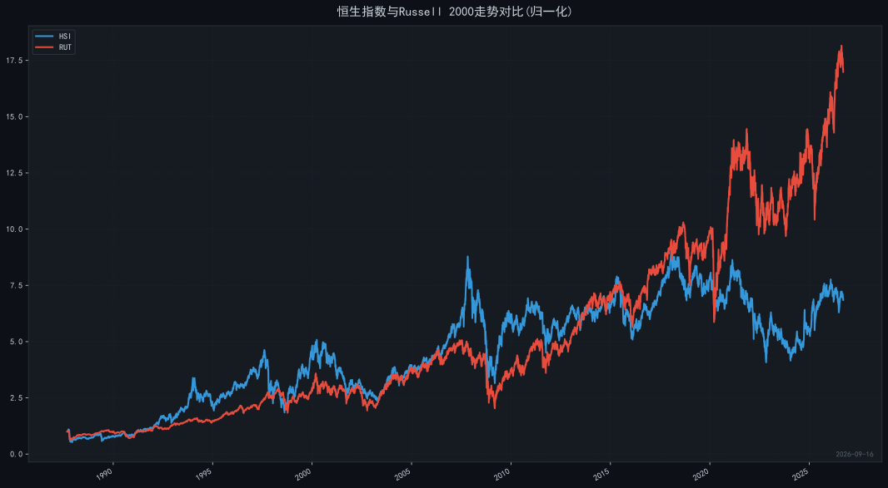

📅 今日报告
今日A股新闻分类摘要
数据时段：2026-09-11
生成时间：2026-09-11 22:10:46
| 分类 | 事件摘要 |
|---|---|
| 中国经济 | 8月CPI公布前油价狂飙：国际油价破百强化美国通胀及加息担忧; 内塔尼亚胡祝贺特朗普对伊朗施压：中东冲突和封锁政策进一步影响能源及通胀预期; 美债长端收益率何以居高难下：即使美联储不加息，长端利率仍可能高位震荡; 澳联邦银行：美国CPI走软或美联储加息或是债市“熔断器”：鹰派交易和债券抛售压力持续; 俄印央行合作建立数字货币结算机制：旨在提升双边贸易跨境支付速度和效率; 国家知识产权局换帅：北大国际经济法博士陈福利履新; 中国金茂前8个月销售额741亿元：同比增长4.5%，体现房企销售温和修复 |
| 全球经济 | 全球市场晨报：美国PPI超预期、油价破百，黄金和白银大幅下跌; 欧洲央行管委内格尔：政策处于中性区间上限，下一步取决于能源价格，并可能进入轻度限制性区间; 美国财政部长债回购未达上限：计划回购60亿美元，实际买入51.9亿美元; 摩根大通：回购投标质量略低：成交范围扩大但未达规模上限，反映卖方惜售; 英国7月经济环比增长0.4%：经济活动保持扩张; 人民币中间价调升23点：报6.7743，汇率总体稳定; 长鑫存储利润率升至82%：息税前利润率超过三星和SK海力士; OpenAI推出Agents API公测版：开发者可通过API构建和运行云端智能体; 特朗普称伊朗误判美国政党立场：继续以防核武器作为对伊政策底线 |
| 中国政策 | 工信部印发“人工智能+软件”专项行动方案：推动AI技术与软件产业深度融合; 三部门提出以高通量及低轨卫星互联网服务农村：完善偏远地区网络接入; 九部门推进智能网联汽车准入和上路通行：支持自动驾驶多场景规模应用; 两部委明确工业品成本核算原则：为认定低价无序竞争提供依据; 李强主持召开国务院常务会议：部署安全生产、算力网、老旧水库改造、教育强国及基金会管理; 老旧水库改造强调“一库一策”：提升工程安全、调度和日常管护能力; 金融助力新一轮找矿突破倡议发布：推动金融资源嵌入勘探开发全流程; 国内汽柴油价格上调：汽油、柴油标准品每吨分别实际上调260元和250元; 证监会处罚编造传播虚假信息的证券从业人员：采取5年市场禁入等措施; 香港证监会勒令涉嫌IPO操纵的眼科公司停牌：涉拨康视云; 政府采购和央企现金支付机制受关注：拟通过合理账期和拖欠惩戒缓解回款难; 江小涓谈中国企业全球化：企业正从“继起全球化”转向“原生全球化”; 新政后深圳首场土拍溢价超100%：中海地产经200多轮竞价拿地; 两名落马中管干部被“双开”并移送司法：涉雷思维、李旭; 江苏原副省长赵岩转任哈工大党委书记：党政干部与高校 leadership 交流继续 |
| 地缘 | 特朗普为打击伊朗辩护：称不后悔相关决定，并预测冲突可能在中期选举后结束; 伊朗总统将会晤莫迪：双方预计讨论冲突及霍尔木兹海峡影响; 胡塞武装占领红海战略要地哈尼什群岛：也门政府军撤离后其部署兵力; 法新社称胡塞武装完全控制曼德海峡：其还进入紧邻海峡的祖巴卜镇; 全球市场风险偏好恶化：标普连跌四日，美油破百，黄金白银大跌，美债收益率逼近5%; 伊朗战争与AI热潮共同推高通胀：传统加息工具抑制物价的效果可能减弱; 特朗普中期选举造势并提出政策承诺：5000美元“发钱”计划缺乏细节、落地前景有限; 美国平均柴油价格突破每加仑6美元：能源成本进一步抬升; 商务部回应美国中情局官员涉华言论：谴责美方间谍活动及“双重威胁”说法; 乌克兰无人机袭击俄罗斯Ozon物流中心：设施起火，两条消息为同一事件; 日本央行被指准备加息25个基点：市场对下周政策会议趋于谨慎; 日韩股市低开：日经225跌逾1.5%，韩国综指跌3.3%，亚太市场承压; 卢拉回应民调压力：称结果不会造成影响，反而会激励自己更加努力; 卢拉提出讨论最高法院法官任期限制：反对法官长期任职 |
| 国际商品 | 国际油价大涨约7%：布油收盘报108.97美元，盘中逼近110美元; 沙特向OPEC报告产量骤降：日产量减少190万桶至623.8万桶，为1990年以来低位; 白银期货主力跌6%：贵金属在高利率和美元压力下明显回落; 碳酸锂期货跌超7%，黄金股同步调整：电池金属和黄金板块风险偏好下降; 贝森特澄清美债及日元干预举措：称部分行动与伊朗相关，并否认“发起挑战”; 人民币汇率稳定吸引境外投资者：人民币股票和点心债需求保持强劲; 甲醇外资净多仓增加：多头单日增持超过5800手; 纯苯基差继续冲高：地缘溢价和成本因素支撑市场 |
| 其他行业 | 工信部将实施汽车标准提升行动：引导企业摆脱低价路径依赖; 九部门规划智能网联新能源汽车发展：2030年自动驾驶汽车规模应用，并推动兼并重组; 儿童癌症用药可及性受关注：低发病率和高研发成本削弱药企投入动力; 智飞生物控股子公司利拉鲁肽投入临床使用：创新药商业化继续推进; 马士基战略面临再评估：集装箱航运从疫情后运力过剩转向新一轮扩张讨论; 青岛外籍货轮检修时起火：事故造成25人遇难; 美国财长称将制裁一家大型银行：行动定于下周一，但未披露机构及国家; 精神病院960万元骗保生意曝光：反映医疗支付和机构内控漏洞; 瑞浦兰钧回应“限制如厕致员工裸奔”：称事件源于离职分歧，并未限制如厕，已报警; 启境汽车就媒体群误发“小米攻防”内容致歉：群聊十分钟后解散; 《黄豆的一生》：以黄豆种植和食用记忆书写乡土经验 |
| 流动性政策 | 内格尔称政策处于中性区间上限：不排除进入轻度限制性区间，下一步取决于能源价格; 黄金点评聚焦PPI与欧央行鹰派信号：通胀预期推动贵金属下跌; 贝森特回应美债干预争议：否认其行动与美联储市场化定价原则冲突; 下周美日央行分别议息：市场重点关注美联储加息概率及日本央行决策; 花旗上调澳洲加息预测：预计2026年再加息两次至4.85%; 新兴市场外汇指数大幅下跌：投资者集中交易美联储加息风险; 央行开展40亿元7天期逆回购：利率维持1.40%，与此前持平; 欧盟重新考虑动用冻结的俄罗斯央行资产：比利时仍要求先解决法律风险 |
| 周期行业 | 俄印石油贸易主要使用印度卢比结算：本币结算在能源贸易中继续扩大; 日本企业物价指数同比上涨7.6%：连续三个月涨幅超过7%，有色和通信设备价格领涨; A股三大指数跌超1%：有色、钢铁、券商和旅游等周期及金融方向领跌 |
| A股股市 | 两市低开：沪指跌0.60%，深成指跌0.98%; 午间深成指、创业板指跌超2%：全市场近5200只股票下跌; 燧原科技上市首日高开188.37%：开盘市值约1700亿元; 浪潮信息拟定增募资不超90亿元：资金将投向AI基础设施等项目; 有色金属及铜板块跌超5%：多只有色ETF跌幅超过4%; 盐湖提锂板块大幅下挫：西部矿业、洛阳钼业及多只锂业股跌逾5%; 旅游酒店局部拉升：曲江文旅、桂林旅游触及涨停; 传媒、农业及港口板块普遍调整：中国出版一字跌停，多只农业股跌超5%; 九鼎新材澄清热点业务传闻：未涉及玻璃基板、电子布，航天产品收入占比不足1%; 瑞尔特称基本面未发生重大变化：连续两日涨幅偏离值累计超过20%; 宁德时代首次回购60.43万股：成交约2亿元; 阿里、大基金等股东减持科技股：合计金额近50亿元; 星宇股份年报再现数据乌龙：三名副总被写成“一年长两岁”; 致远互联公告日期与星期不符：细节错误再度引发信披质量讨论; 华宝基金ETF早知道：集中梳理银行及创业板人工智能ETF; 三大指数走弱背景下红利低波策略占优：防御风格相对稳健 |
| 中国财政 | 贝森特淡化美债回购不及预期：称近期拍卖强劲，美债市场依然健康; 美债回购未满上限推动收益率上行：10年期收益率创三年新高，全球债券遭抛售; 美国住房事务负责人主张削减监管：试图通过放松规则改善购房负担; “富豪排队补税、海底捞大跌”视频引发关注：税收合规与消费龙头市场表现成为舆情焦点 |
| 国际股市 | 标普500连续第四日下跌：存储芯片股普跌，美债收益率大涨; 亚洲主要市场走低：日经225跌幅扩大至3%，恒指及科指低开; Oklo或发行至多10亿美元普通股：消息公布后盘前股价跌4.1%; 智谱拟配售约2197万股H股：配售价为每股714港元; 百度回购55.72万股：耗资约4999.56万港元; 蓝月亮亏损12亿元仍分红20亿元：创始人夫妇分得14.59亿元; 美国财长所属金融交易公司历史回顾：公司在“9·11”事件中损失600余人 |
| 科技行业 | 微软计划将全球数据中心容量扩大逾两倍：2032年规模预计超过38GW; 3E网络发布适配英伟达Rubin架构的AI数据中心方案：面向新一代算力平台; OpenAI推出Agents API公测版：降低云端智能体开发门槛; 智能体商业模式仍处早期：意图理解、交易完成和用户信任是主要瓶颈; OpenAI考虑放缓前沿模型研发：Altman希望同行共同减速; 黄仁勋称网络安全将成为AI下一个重大市场：自动化编程加快攻防循环; 上海推动材料前沿研究与国家需求衔接：面向“十五五”强化原始创新和场景牵引; 三部门部署农业传感器、专用芯片等攻关：覆盖核心算法、机器人和智能育种工具; 动力及储能电池新建项目审批或收紧：政策拟防范盲目扩张，并纳入年底考核; AirPods 5体验发布：两个版本带来三项升级; GPT及T行业周报密集更新：涉及DeepSeek降价、折叠屏手机、Meta智能体及人形机器人模型 |
| 其他 | 《新闻联播》主要内容：涵盖国务院常务会议、市场监管所条例及外交活动; 早间要闻与日内关注提示：汇总宏观数据、市场事件和重点时间; 西安电子科大新生测试引发讨论：争议核心是拔尖人才选拔与试题难度; 香港低龄学生自杀率上升：近七成个案来自第一梯队学校; 学术造假治理再受关注：生物医学领域诚信建设仍面临复杂环境; 世卫组织提示吸烟损害生殖健康：不孕风险增加约四成，辅助生殖成功率或减半; 瑞浦兰钧回应员工“裸奔”视频：称源于离职分歧，否认限制如厕; 吴彦祖批评China GT事故处置：重大撞车起火后赛会方应对不足; 共和党大会上的5000美元承诺受审视：选民反应不一，政策细节不足; 爱尔兰徒步纪行：延续旅行与地方文化叙事 |
| 数字资产 | 商业银行存款代币化的国际经验与启示：代币化存款被视为连接双层货币体系与数字金融的重要路径，中国需同步推进基础设施、应用和规则建设 |
生成时间：2026-09-11 22:21:02 (UTC+8)
使用模型：openrouter:inclusionai/ling-3.0-flash-fin:free
📊 5天报告
A股股市
2026-09-06 至 2026-09-10 市场数据时间段
宏观叙事焦点
叙事主线一：布伦特原油突破100美元，市场避险情绪升温 ⭐⭐⭐
主要事件：布伦特原油结算价涨至107.63美元，沙特原油日产量骤降190万桶
分析：中东冲突升级直接推高能源价格，引发全球通胀担忧和避险资产（黄金）上涨。原油突破100美元的历史性走势加剧了市场对通胀的预期，推动美联储加息压力增大，同时对全球股票市场产生双重冲击——防御性资产受益，成长型股面临估值压制。
叙事主线二：美伊冲突升级，能源供应担忧加剧 ⭐⭐
主要事件：美伊冲突升级，伊朗石油装载量大幅下降，美油飙涨7%破百
分析：美伊军事对峙持续加剧，伊朗石油产量骤降至战前水平的1/3，导致全球油价创下历史新高。能源价格上涨传导至通胀预期，影响美联储加息决策和全球流动性。此事件形成完整的传导链：地缘冲突→能源供应担忧→油价飙升→通胀与利率上行→风险资产承压。
叙事主线三：政策层面影响，市场结构优化 ⭐
主要事件：证监会将A股打造为境内优质企业上市首选地
分析：监管层面政策推动A股市场长期发展，简化发行、上市和并购重组制度，提升市场效率和包容性。这一政策利好长期成长型企业，但短期内可能导致部分传统上市公司流向其他市场，需关注政策落地效果和市场响应速度。
国际商品
gantt
title 5日宏观叙事演化
dateFormat YYYY-MM-DD
section 政策驱动
2026-09-07 政策发布与市场反应
2026-09-08 政策调整与市场调整
2026-09-09 政策深化与市场响应
2026-09-10 政策巩固与市场定型
section 地缘冲突
2026-09-07 地缘冲突升级，能源供应担忧
2026-09-08 油价突破100美元，市场避险情绪升温
2026-09-09 布伦特原油持续高位，全球通胀预期升温
2026-09-10 市场定价调整，风险偏好下降
市场情绪
市场情绪：谨慎偏空
核心要点：
- 布伦特原油突破100美元，引发全球通胀担忧和避险资产（黄金）上涨
- 美伊冲突升级导致能源供应担忧，进一步推高油价和通胀预期
- 政策层面（证监会改革）虽有积极面，但短期内市场仍受地缘和宏观因素主导
- 风险偏好持续下降，成长型股和高估值板块面临估值压力，防御性资产（黄金、债券）相对受益
关键指标：
- 美联储加息概率升至71%
- 美债收益率创历史新高（10年期约4.94%）
- 黄金价格突破4400美元/盎司，显示避险情绪强烈
- A股市场整体低迷，主板指数午后翻绿但整体情绪仍偏弱
生成时间：2026-09-11 22:21:33 (UTC+8)
使用模型：openrouter:liquid/lfm-2.5-2.6b:free
🔍 核心市场洞察
- 行业轮动: 行业轮动强度5.56% 美股能源, 美股医药
- 指数差异: 纳指+3.78% 标普+2.23% 罗素-0.93% 成长风格
- 风险环境: VIX15.84 美国债4.97% 🟡 中风险
- 中美联动: 恒指-3.59% 汇率-0.20% 😞 港股显著跑输 HSI-RS2000(30d:0.002)
- 流动性: 融资13311亿 Shibor1.42% 🟢 宽松环境
- 股债利差: 利差-7.62(7分位)
- 油金比: 当前值0.023(97分位) 当日-4.49% 偏离度2.010(极度偏离)
- 偏离预警: Shibor 1M与沪深300的负相关关系正在断裂：历史平均相关-0.01，近期-0.47，漂移-0.46
- 偏离预警: 中美国债利差与沪深300的正相关关系正在断裂：历史平均相关0.05，近期0.41，漂移+0.36
- 偏离预警: 罗素2000(小盘)当前水平偏低于基准应有的预测值，残差-86.16（阈值45.09）
💰 融资余额
分析融资余额变化与股汇变化、大盘指数的同步趋势，识别市场杠杆水平和资金流向。
🔻 融资余额变化与股汇变化同步趋势
展示融资余额与A股、汇率变化的联动关系，帮助判断市场杠杆资金流向与汇率波动的相关性。

🔻 融资余额与大小盘指数同步趋势
对比融资余额变化与沪深300（大市值）和中证1000（小市值）指数的同步趋势，识别市场风格偏好。

📊 融资余额分析
当前融资余额为15150亿，处于相对高位水平。当融资余额突破均线时可能预示市场情绪变化，为短线操作提供参考信号。融资余额与大盘指数呈现正相关，可作为市场热度的重要指标。
🌍 中美市场联动
分析恒生指数与美股小盘股的相关性，追踪中美政策协调对跨境资本流动的影响。
🔻 恒生指数与罗素2000对比走势
合并对比恒生指数与罗素2000（美股小盘股）的走势相关性，直观反映中美市场的联动效应和跨境资本流动情况。当前恒指较美股显著跑输，需关注政策协调动向。

📊 中美市场联动解读
分析恒生指数与美股小盘股的相关性，追踪中美政策协调对跨境资本流动的影响，识别跨市场套利和风险传导路径。
📉 股债利差
通过比较股票风险溢价与债券收益率，评估当前市场环境下股票和债券的相对投资价值。
🔻 股债息差分析
股债利差当前为-7.30（17分位），处于历史较低水平，表明股票相对债券的吸引力有限。股债30日相关性为-0.668，呈现负相关特征。

📊 股债性价比解读
通过比较股票风险溢价与债券收益率，评估当前市场环境下股票和债券的相对投资价值，为资产配置提供参考。
💧 流动性环境
分析市场资金面、货币政策和信用扩张情况，评估流动性对股票市场估值和交易活跃度的影响。
🔻 流动性分析
当前融资余额为15150亿，Shibor利率1.42%，显示市场流动性处于宽松环境。AI流动性评分为65，表明资金面支持市场表现。

📊 流动性环境解读
分析市场资金面、货币政策和信用扩张情况，评估流动性对股票市场估值和交易活跃度的影响。
🛢️💱 油金比与国债
综合分析原油、黄金价格走势与美国国债收益率的联动关系，反映全球经济增长预期、通胀压力和地缘政治风险。
🔻 原油与黄金价格走势对比
油金比反映全球经济增长预期和地缘政治风险。当油金比上升时，通常意味着原油需求增加（经济增长预期好）或黄金避险需求下降；反之则表示经济增长预期减弱或地缘风险上升。当前原油价格与黄金价格呈现一定的负相关关系。

📊 油金比解读
分析原油与黄金价格的比值变化，反映全球经济增长预期和地缘政治风险，为大宗商品投资提供信号。
📈 市场分析
基于多维度市场数据的综合分析，包括核心指标、偏离预警、行业轮动和AI评分。
🏢 行业轮动
强度 10.70%
领涨: 美股医药, 美股金融
📊 指数差异
纳指-1.67%
标普+0.68% 罗素+6.34%
⚠️ 风险环境
中等风险
VIX15.81 美债4.37%
🌍 中美联动
港股显著跑输
恒指-8.97% 汇率-0.34%
💧 流动性
宽松环境
融资15018亿 Shibor1.42%
📉 股债利差
-7.30
17分位 性价比低
🛢️ 油金比
0.016
38分位 正常范围
📊 偏离信号
32个信号
高严重性: 27个
🚨 偏离预警信号
罗素2000(小盘)偏高于基准
残差83.62（阈值44.91），小盘股强势
纳斯达克100(科技)偏低于基准
残差-13.02（阈值6.10），科技股弱势
REITs(房地产)相关性断裂
历史平均相关0.65，近期-0.17，漂移-0.82
日经225偏高于基准
残差2416.94（阈值1210.09），日本股市强势
金融板块相关性断裂
历史平均相关0.84，近期0.08，漂移-0.75
恒生指数偏低于基准
Z-score(-2.12)低于基准(1.32)，分歧-3.44σ
能源板块相关性断裂
历史平均相关0.58，近期-0.30，漂移-0.88
原油价格偏低于基准
Z-score(-2.02)低于基准(0.77)，分歧-2.79σ
📊 AI综合评分
综合评分
53.8
市场状态: 中性
风险评分
50
中等风险
流动性
65
良好
估值水平
50
一般
趋势强度
50
中性
资产配置建议
📈 股票: 50%
📊 债券: 30%
🥇 黄金: 10%
💰 现金: 10%
🔻 当前热点行业
近1月行业表现分析：美股医药领涨(+8.14%)，美股金融紧随其后(+6.95%)，美股工业表现稳健(+4.66%)。美股科技(-3.68%)和能源(-8.76%)表现落后，显示市场风格向价值股切换。融资余额15018亿，流动性环境宽松。

📌 更多市场图表（价格分位数分布、60日涨幅分析、市场情绪、甘特图等）已整合到导航栏「涨幅分布」「主升概念」「走势AI分析」等深度报告中。
⚠️ 风险环境
基于VIX指数、债券收益率和市场波动率的综合风险评估，为投资者提供风险警示和防御建议。
📊 风险评估指标
VIX波动率
15.93
38分位
美国10Y国债
4.37%
中等风险
风险评分
50
中性
📋 风险环境解读
基于VIX指数、债券收益率和市场波动率的综合风险评估，为投资者提供风险警示和防御建议。当前市场风险处于中等水平，建议保持谨慎配置，关注美联储政策动向和地缘政治风险。
📊 涨幅分布报告
正在加载报告...
🚀 主升概念报告
正在加载报告...
📋 TDX综合分析报告
正在加载报告...
🤖 AI分析摘要
正在加载报告...
📈 走势AI分析报告
正在加载报告...
🔗 合并解读
正在加载报告...
💹 ETF申赎与成交额占比分析报告
正在加载报告...
关注微信公众号

扫码获取实时更新